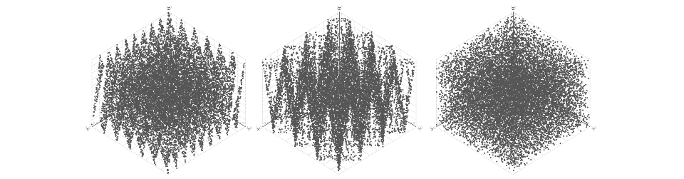

Welcome to my website! I'm Zoltan, a mathematical logician and educator based in Sydney, Australia. I currently work as Lecturer in Formal Methods at the University of New South Wales. My work spans a wide range of areas within mathematics, including proof theory, category theory, finite algebraic structures, combinatorics, and even nonstandard analysis. I also enjoy working with interactive theorem proving software, and advocate for its integration into mathematical research and education.
My PhD thesis (available here)
explores two novel algebraic applications of Nelson's Internal Set Theory, a syntactic
framework for nonstandard analysis.
In my thesis, I propose an explicitly topological formalism of structural
approximation of groups, generalizing previous work by Gordon and Zilber.
Using this new formalism, one can show that every profinite group admits a finite approximation in the
sense of Zilber, and prove various results about LEF groups. My main result states that well-behaved actions of the approximating group on a
compact manifold give rise to similarly well-behaved actions of periodic subgroups of the
approximated group on the same manifold. The theorem generalizes earlier results on discrete circle actions,
and gives partial non-approximability results for SO(3).
Formulating and proving results about continuous functions in a so-called "pure" fragment of
Internal Set Theory allows us to extract various computational bounds from them syntactically. I showed that
sheaves over topological spaces also admit such a "pure" presentation, equivalent to the usual definition over standard objects.
By introducing a non-standard (and very much non-constructive) extension of Martin-Löf Type Theory
with a hierarchy of universes for external propositions along with an external standardness predicate,
I was able to formally verify my results using the Agda proof assistant.
Degree of Satisfiability
The idea
Which non-Abelian group is closest to being Abelian? Which composite number is farthest from being prime?
Such questions can be formulated and answered using the theory of Degree of Satisfiability (and result in
striking visual arrangements that feature heavily on this website). Degree of satisfiability
has connections to property testing and
black-box algebraic structures.
The degree of satisfiability of a logical formula φ(x,y) is the probability that φ(a,b) holds for
uniformly randomly chosen values a,b. An interesting phenomenon occurs: for many formulas, the degree of
satisfiability is either exactly 1, or else much less than 1. While infinite algebraic structures don't
usually come equipped with a notion of uniform distribution, degree of satisfiability nonetheless
generalizes well both to virtually nilpotent infinite groups, and to LEF structures.
Heyting algebras
Heyting algebras: in our article,
Degree of satisfiability in Heyting algebras, Ben Bumpus and I
characterized all the 1-variable equations in Heyting algebras according to their degree of satisfiability.
In particular, we showed that the equation p∨¬p=1 has satisfiability gap 1/3: if a Heyting algebra is not
Boolean, then at least 1/3 of its elements fail to satisfy the law of excluded middle! As a corollary, we also
get that all infinite T0-separable topological spaces, except for the discrete ones, have more non-closed
open sets than clopen sets. Recently, Charles Evans obtained similar
results for BCK-algebras as well.
Groups
In Degree of satisfiability of some special equations,
I showed that the equations xyy=yyx, xyyy=yyyx and yxy=x (as well as an infinite family of others
obtained from these) have satisfiability gaps. I also introduced a simple criterion to identify which
equations hold in a finite index subgroup of an infinite group precisely if they have positive degree of
satisfiability.
Psuedo-randomness and Homology

The idea
Which one of these three point clouds can we get by sampling the unit cube using a pseudo-random
sequence? Surprisingly, the answer is any one of them, depending on the sequence we use! Above, I used
three different pseudo-random number generators to sample points from the cube, and got three
drastically different results.
As a topological manifold, the unit cube has one connected component, and no holes. However, the sample
obtained using the first pseudo-random number generator above (the infamous RANDU) seemingly consists of
15 or so separate connected components. In the second sample (XorShift64, scaled), there is only one
component, but the sample still looks like the union of multiple planes, enclosing many holes.
Persistent Homology
Using persistent homology, one can rigorously define the Betti numbers of point samples,
and investigate their relationship to the Betti numbers of the sampled manifold. In my honours thesis
(University of Stirling, 2016; available on request) I classified some pseudorandom sequences based on
their ability to reflect the topological properties of the manifolds they sample, and developed an
algorithm that can test for failures of uniformity by calculating persistent homology groups of the samples.
This can be seen as an alternative to the spectral test for the assessment of the quality of uniformity of
d-dimensional points that remains stable under small perturbations of the generator. The thesis also
contains an alternative proof of the Cohen-Steiner, Edelsbrunner, Harer result on the stability of
persistence diagrams.
Structured Decompositions
Treewidth
One can define the treewidth of an undirected graph in several equivalent ways: e.g. as the size of the largest set of vertices
that occur in all tree decompositions of the graph, or as the maximum order of connected subgraphs that
touch each other, i.e. brambles.
Spined categories
In our article, Spined categories: generalizing tree-width beyond graphs
Ben Bumpus and I obtained a new characterization of treewidth as a functor preserving proxy pushout
structure on a category of unordered graphs. We obtained a whole bunch of categories which admit
tree-width-like invariants, allowing us to recover hypergraph tree-width and complemented tree-width
using the same consrtuction.
Structured decompositions
Graphs of bounded treewidth often come up when examining the parametrized complexity of graph algorithms.
The idea is to find graph invariants k so that the complexity of an otherwise intractable algorithm depends only
polynomially on the size of the input graph, but may depend exponentially on the value of the invariant invariant k.
Many families of graph algorithms that have been studied in detail display fixed-parameter tractability,
i.e. can run in polynomial time on graphs of fixed bounded treewidth. In joint work with
Ben Bumpus and Jade Master, we introduce the notion of
structured decompositions, which provide a categorial
setting for the study of fixed-parameter tractability, including the ability to define generic algorithms,
and yields generalizations of many combinatorial invariants such as layered tree-width and graph
decomposition width. The resulting decompositions also have striking similarity to graphs of groups
familiar from Bass-Serre theory.
Proof Theory
Internal Type Theory
Nonstandard analysis is a rich formalism for analysis that allows us to work directly with infinite and
infinitesimal ideal objects. Nelson's Internal Set Theory extends ZFC Set Theory with a new predicate
"is standard", and three new axiom schemata governing it, which allows one to provide a syntactic
treatment of nonstandard analysis, and to write down an explicit proof-theoretic translation showing the
conservativity of nonstandard analysis over ordinary set theory. In my PhD thesis
(available here)
I introduced Internal Type Theory, an extension of Martin-Löf Type Theory largely analogous to
Nelson's extension of ZFC. This allowed me to verify the main group-theoretic results of my PhD thesis
using Agda, an interactive proof assistant based on Martin-Löf Type Theory.
Apartness relations
Apartness relations are irreflexive, symmetric and cotransitive binary relations. They act dually to
equivalence relations: instead of saying when two things are the same, they state when two things
differ. Apartness relations have fundamental importance in constructive algebra: unlike in
classical mathematics, equivalence relations cannot take their place. In my article,
Apartness relations between propositions,
I classify all apartness relations definable in propositional logics extending intuitionistic logic, and show that
one cannot construct non-trivial apartness relations between propositions without invoking the weak law of excluded middle, nor
tight apartness relations between propositions without invoking excluded middle. This answers a question of Rijke on the
correct notion of apartness between propositions. Using parametricity techniques, I also show that
Martin-Löf Type Theory cannot construct non-trivial apartness relations between propositions.
A unary proof system
The usual Hilbert system for classical propositional logic uses three axioms and one rule
of inference, modus ponens. However, the modus ponens rule is binary (requires two premises). In a
Math StackExchange answer, I construct a proof system
that consists only of unary rules. The idea is to use conjunction to emulate three stacks, and have
each inference rule operate by taking arguments from one of the stacks.
News and Media
14 Nov 2022
My seL4 Summit 2022 talk on the formal verification of the Core Platform is now available on YouTube.
09 Oct 2022
Between 01 and 09 Oct, Ben Bumpus, Jade Master and I visited Tallinn University of Technology, where we spent a week researching the relationship between monoidal width and structured decompositions. We thank Pawel Sobocinski and Elena di Lavore for organizing and supporting this research meeting!
28 Sep 2022
I'll be giving an invited talk next year at Constructive Mathematics: Foundation and Practice, probably on the interactions between degree of satisfiability, logical anti-exceptionalism, and constructivism.
10 Sep 2022
My latest article, Apartness relations between propositions, has hit the arXiv! In it, I answer a question of E. Rijke about the correct notion of apartness for logical propositions, give a short classification of apartness relations between propositions that can occur in a Heyting algebra, and show that Martin-Löf Type Theory is not able to construct non-trivial apartness relations between propositions.
14 Jul 2022
Our new article about Structured Decompositions has appeared on the arXiv! This is joint work w/ Ben Bumpus and Jade Master, and follows up on earlier work Ben and I did on Spined Categories.
A bunch of SMT-based tools I developed for a model-based security engineering project have been open-sourced, available from the CSIRO Data Access Portal (joint work w/ Ihor Kuz).
27 Aug 2021
Upcoming talk on combinatorics and spined categories at Category Theory 2021, 3 Sep 2021, Genoa, Italy. (Joint work, presented by Ben Bumpus).
I received the CSIRO SCS Engineering and Technology Award, awarded for our high-impact work on binary verification for the 64-bit RISC-V architecture (along with my teammates Matthew Brecknell and Dr Mitchell Buckley).
06 May 2021
Click here to read the RISC-V International coverage of my work, bringing Translation Validation to RISC-V!
05 May 2021
Prof. Gernot Heiser's blog post on our seL4 verification work hit the front page of news aggregator news.ycombinator.com today!
I gave a talk about degree of satisfiability at the CSIRO Trustworthy Systems seminar, including announcing some results on degree of satisfiability in Heyting Algebras.
I find the Big City and the Great Outdoors equally comfortable. On my day off, you're just as likely to meet me in the dense urban area of the Sydney CBD as in the coastal bushlands of New South Wales.
If you live in the UK, you may know me from Manchester Orators, a chartered club for the promotion of public speaking, presentation and leadership skills. I was a member between 2017 and 2019, and I hope to return one day.
At home, you'll find me in the kitchen. Fusion cuisine, simple ingredients, mise en place. Sometimes, something good comes out of it.
Contact
If you have any questions, or if you wish to hire me as a consultant, use the email address below. You can also find me on the Mathematics Stack Exchange and on Semantic Scholar.
To find out my email address, enter the number ---- below: